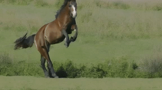
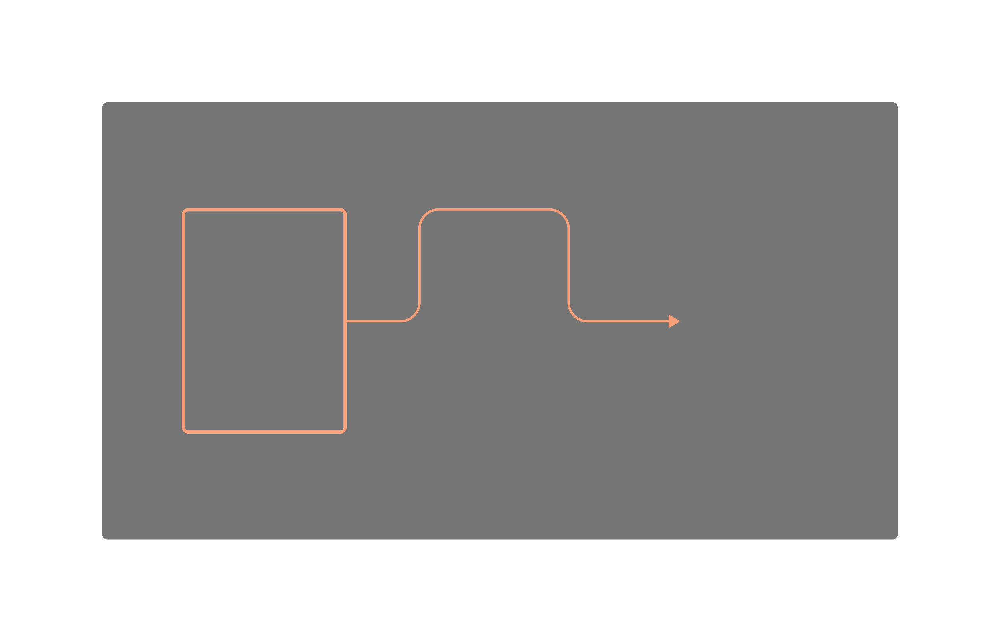

A Horse galloping through a meadow

Peekaboo proposes converting attention modules of an off-the-shelf 3D UNet into masked spatio-temporal mixed attention modules. We propose to use local context for generating individual objects and hence, guide the generation process using attention masks. For each of spatial-, cross-, and temporal-attentions, we compute attention masks such that foreground pixels and background pixels attend only within their own region. We illustrate these mask computations for an input mask which changes temporally as shown on the left. Green pixels are background pixels and orange are foreground. This masking is applied for a fixed number of steps, after which free generation is allowed. Hence, foreground and background pixels are hidden from each other before being visible, akin to a game of Peekaboo.
Peekaboo allows us to control the trajectory of an object precisely.
Peekaboo allows us to control the position and size of an object through bounding boxes.

We propose two new benchmark datasets for evaluating spatio-temporal control in videos.
For each prompt-bounding box input pair, we generate a video using the baseline model and our method. We then use an OwL-ViT model to label the generated video with frame-wise bounding boxes.
We propose the following metrics to measure the quality of interactive video generation models.
We present the results below.
| Method | DAVIS16 | LaSOT | ssv2-ST | IMC | ||||||||||||
|---|---|---|---|---|---|---|---|---|---|---|---|---|---|---|---|---|
| mIoU % (↑) | AP50 % (↑) | Cvg. % (↑) | CD (↓) | mIoU % (↑) | AP50 % (↑) | Cvg. % (↑) | CD (↓) | mIoU % (↑) | AP50 % (↑) | Cvg. % (↑) | CD (↓) | mIoU % (↑) | AP50 % (↑) | Cvg. % (↑) | CD (↓) | |
| LLM-VD | 26.1 | 15.2 | 96 | 0.19 | 13.5 | 4.6 | 98 | 0.24 | 27.2 | 21.2 | 61 | 0.12 | 33.5 | 24.7 | 97 | 0.14 |
| ModelScope | 19.6 | 5.7 | 100 | 0.25 | 4.0 | 0.7 | 96 | 0.33 | 12.0 | 6.6 | 44.7 | 0.17 | 9.6 | 2.4 | 93.3 | 0.25 |
| w/ Peekaboo | 26.0 | 16.6 | 93 | 0.18 | 14.6 | 10.2 | 98 | 0.25 | 33.2 | 35.8 | 63.7 | 0.10 | 36.1 | 33.3 | 96.6 | 0.13 |
| ZeroScope | 11.7 | 0.1 | 100 | 0.22 | 3.6 | 0.4 | 100 | 0.3 | 13.9 | 9.3 | 42.0 | 0.22 | 12.6 | 0.6 | 88.0 | 0.26 |
| w/ Peekaboo | 20.6 | 17.9 | 100 | 0.19 | 11.5 | 11.9 | 100 | 0.28 | 34.7 | 39.8 | 56.3 | 0.17 | 36.3 | 33.8 | 96.3 | 0.12 |
As demonstrated by mIoU and CD, the videos generated by the method endow the baselines with spatio-temporal control. The method also increases the quality of the main objects in the scene, as seen by higher coverage and AP50 scores.
Template for this webpage was taken from MotionCtrl.